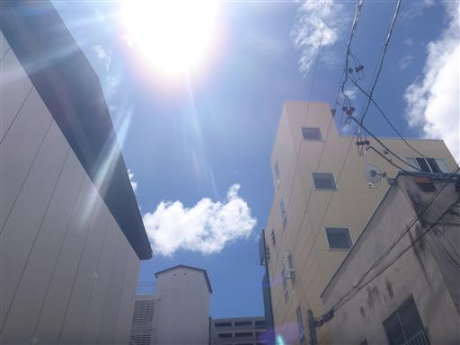
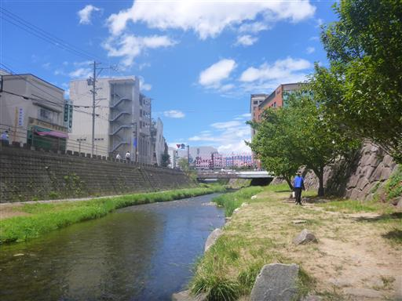
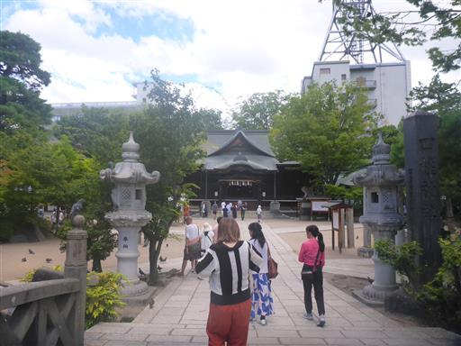
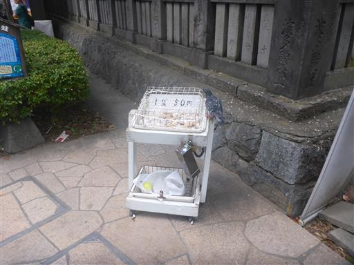
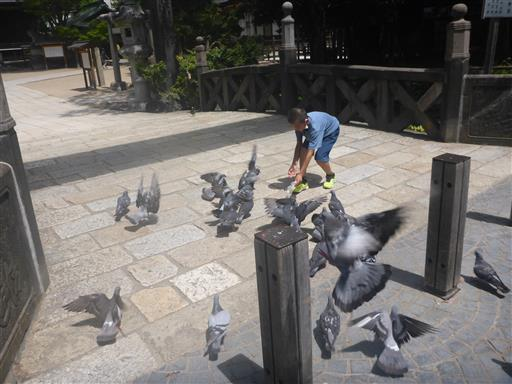
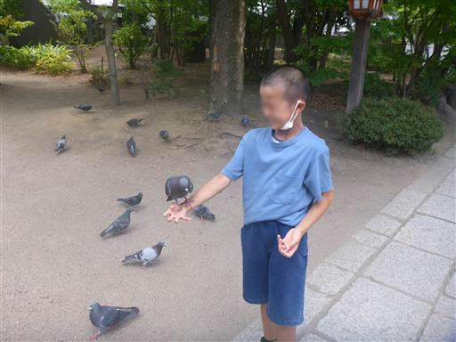
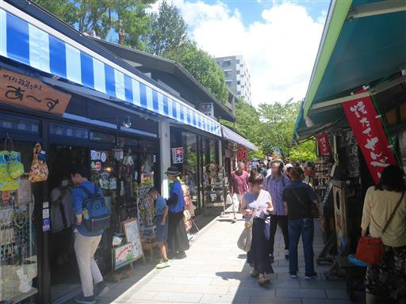
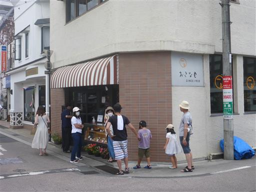
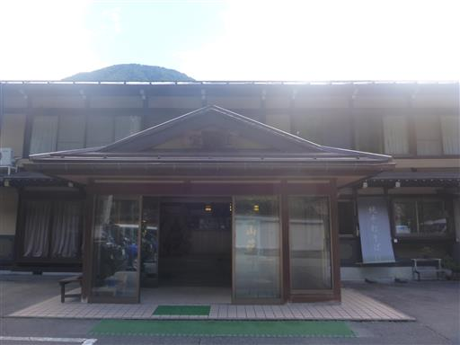
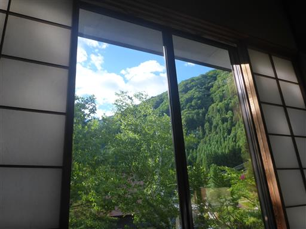

鷲羽岳～水晶岳
| 日付 | 2023年8月14日（月） - 2023年8月19日（土） | ||||||||
|---|---|---|---|---|---|---|---|---|---|
| 山域 | 北アルプス | ||||||||
| メンバー | 家族（妻、長男・10歳） | ||||||||
| 山行形態 | 子連れ5泊6日旅館、山小屋、キャンプ泊 | ||||||||
| アクセス | 車 | ||||||||
| ルート (Map) |
|
今年の夏期休暇は初の子連れ北アルプスに行く計画を立てる。
目的地は北アルプスの中心地、水晶岳と雲ノ平を周遊する予定だ。
今は小屋が完全予約制なので、3ヶ月前から小屋の予約を取り、
旅行直前は天気予報とにらめっこ。
運悪く台風7号が日本を直撃する予報が出ており、計画変更も考えたが、
他に晴れそうな場所がなさそうなのと、台風が少し北アルプスから逸れそうだったので、
当初の計画を決行することにする。
1日目
本日は移動のみ。昼食をとるため松本に寄り道する。快晴だ。

レストランが混雑していて1時間待ち。待ち時間に周囲を散策。
女鳥羽川の畔を歩く。

昨年も訪れた四柱神社。

ハトの餌が売られている。

ハトに餌をあげると、どんどん寄ってくる。

手の上にも飛び乗ってくる。人懐こいハトだ。

ハトと遊んだ後は、なわて通り商店街で買い物。

順番が来たとのTelが来たので、レストランに移動。
松本の名店・おきな堂で昼食をとる。

昼食後は本日の宿・宝山荘に移動。

部屋の窓からの景色。
温泉のお湯が熱くてゆっくり入れなかったが、夕飯は工夫に富んでおり
宿の人は親切で、良い宿だった。
